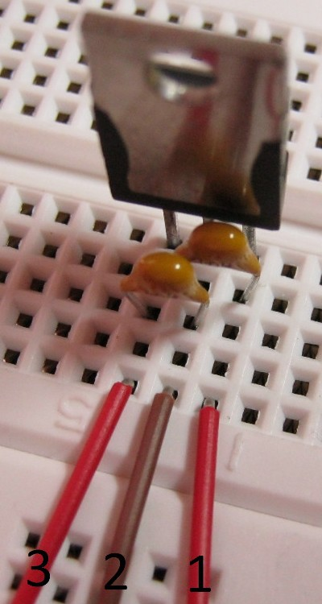
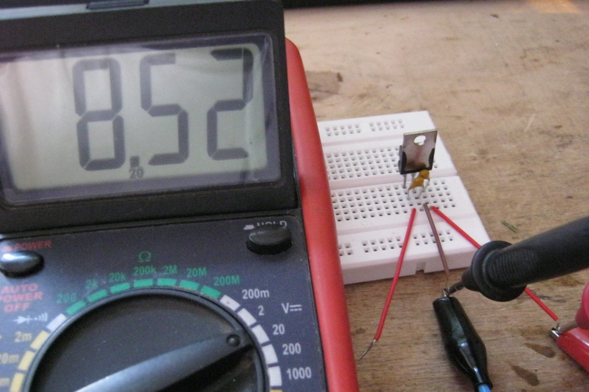
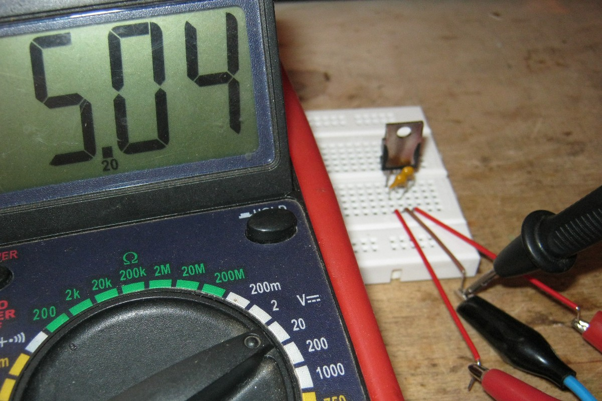

Исследование работы стабилизатора LM7805
На макетной плате собираем типовую схему (рис. 1) подключения стабилизатора LM7805.

Рис. 1 - Типовая схема подключения стабилизатора LM7805

Рис. 2 - Типовая схема подключения стабилизатора LM7805 собранная на макетной плате
На провода 1 и 2 подаем нестабилизированное входное постоянное напряжение. С проводов 3 и 2 снимаем выходное напряжение 5 В. Входное напряжение изменяем в диапазоне 7,5 ... 20 Вт.

Рис. 3 - Измерение входного напряжения - 8,52 В

Рис. 4 - Измерение выходного напряжения - 5,04 В
Источники
ruselectronic.com - Трехвыводные стабилизаторы напряжения
rudatasheet.ru - LM78XX/LM78XXA 3-х выводной 1 А положительный стабилизатор напряжения